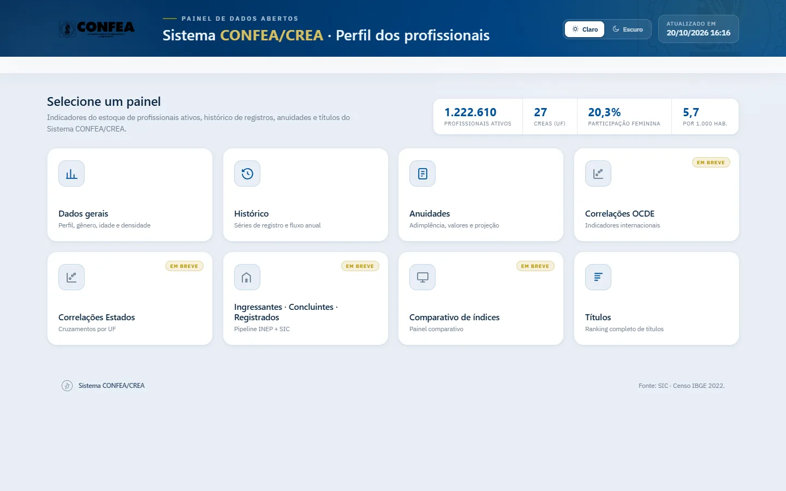
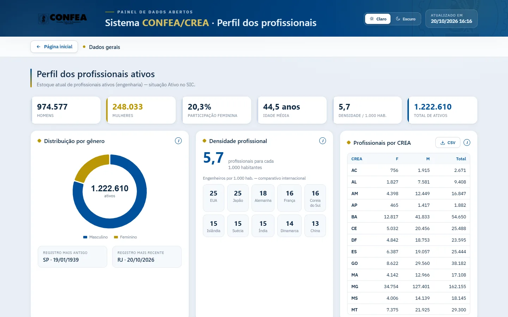
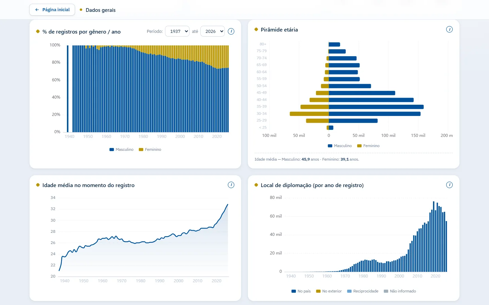
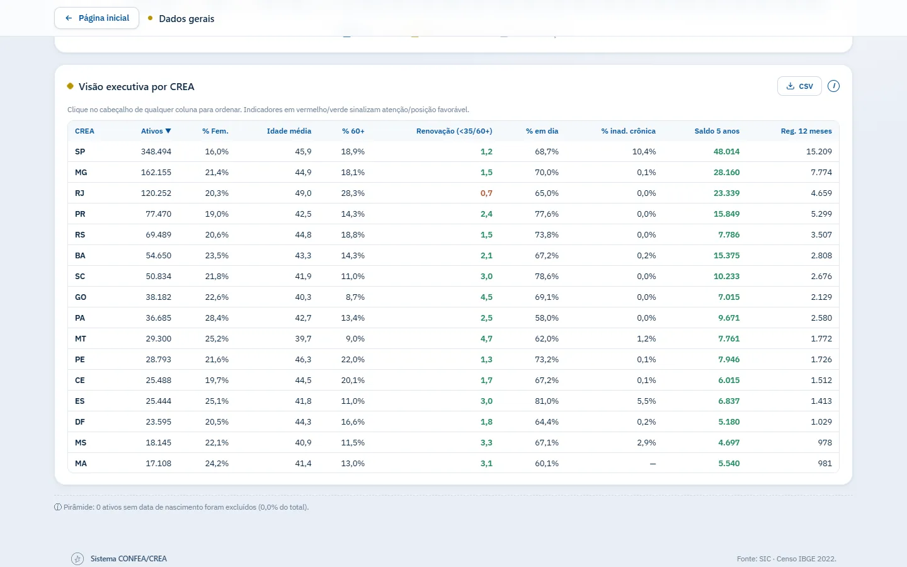
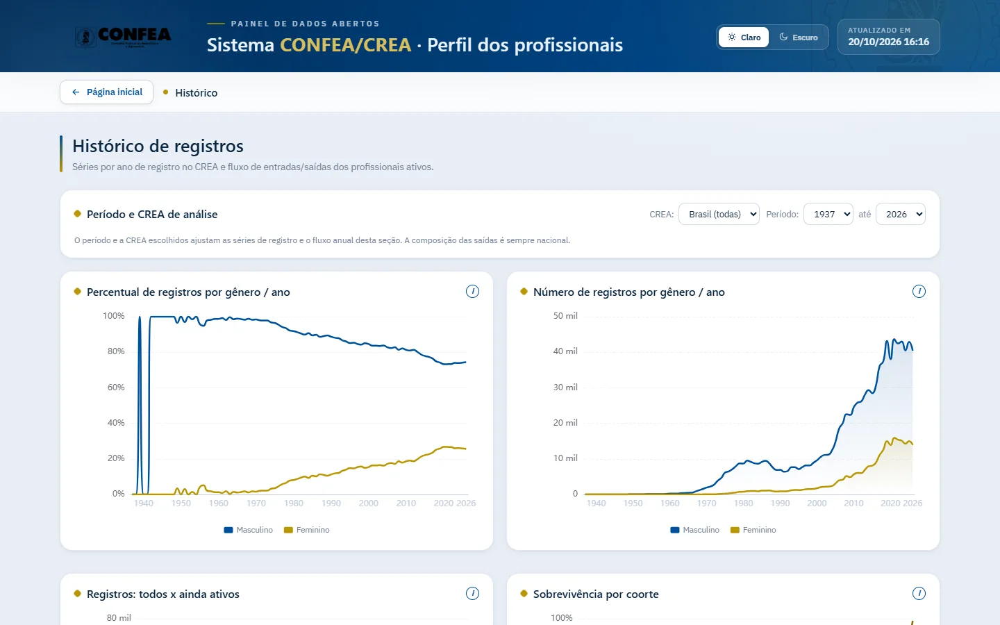
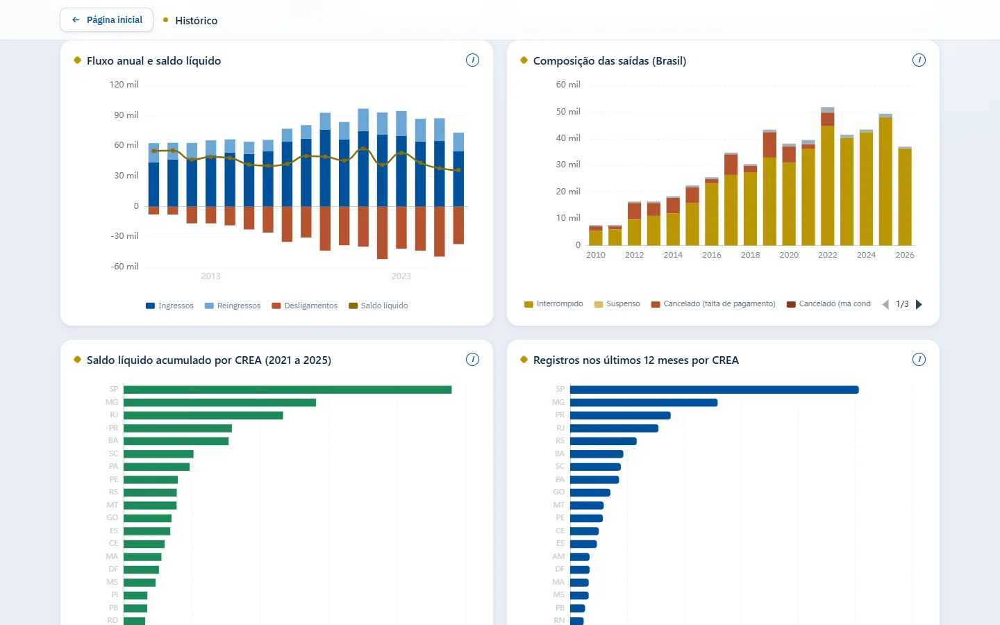
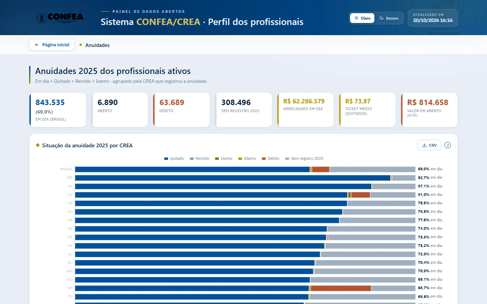
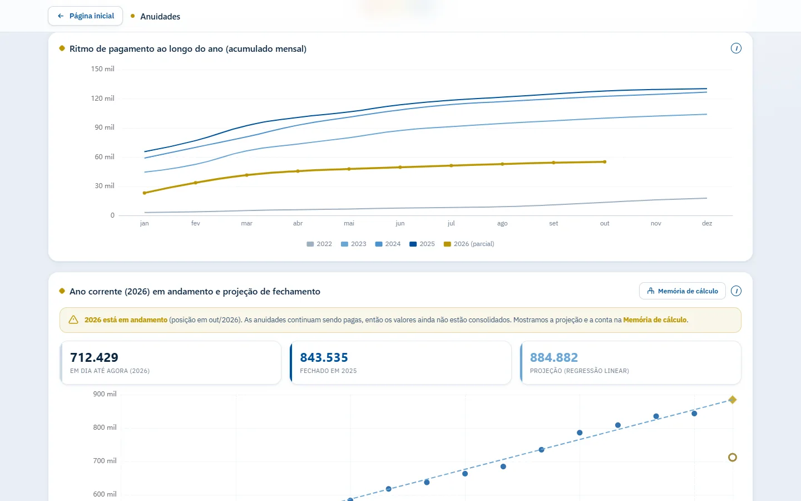
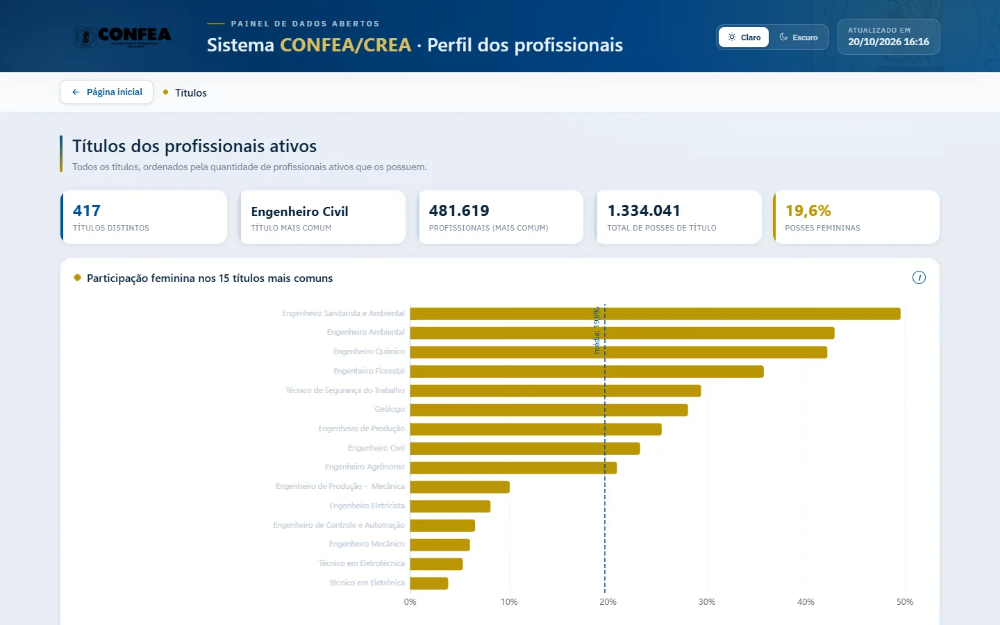

Painel do Sistema Confea/Crea
Painel com os profissionais registrados no Sistema Confea/Crea, gerado a partir de uma extração datada do banco nacional de registros, com as regras oficiais de contagem.
- Instituição
- CONFEA
- Fonte
- Banco nacional de registros
- Período
- 2010 a 2026
- Saída
- Extração datada e painel web
Telas
Capturas do painel gerado com a extração de 20/10/2026. Só números agregados.


















Fluxo de páginas
Página única em HTML: o botão Página inicial volta ao menu.
Fluxo do processo
Cada versão do painel sai de um arquivo de extração guardado. Há 11 extrações de junho a outubro de 2026.
Regras de contagem
- AtivoSituação cadastral 2. A contagem conferida deu 1.203.786 contra 1.204.609 do painel oficial (0,07% de diferença).
- EngenhariaExclui os grupos de título Arquitetura e Especiais.
- Anuidade em diaQuitada, remida ou isenta, contada pelo Crea que lançou a anuidade.
- DesligamentoInterrompido, suspenso ou cancelado (7 códigos de situação).
- ReingressoReativação a mais de 60 dias do primeiro registro.
- DatasDatas futuras de registro, nascimento ou pagamento são descartadas.
Fluxo de 2025
Saldo líquido por ano
Ingressos mais reingressos menos desligamentos, Brasil
2025 tem o menor saldo da série de 2010 a 2025.
Achados
dos ativos são mulheres (248.033 de 1.222.610)
anos de idade média: mulheres e homens
dos ativos estão em SP (348.494)
das anuidades de 2025 em dia (843.535)
registros nos últimos 12 meses
profissionais sem anuidade em dia nos últimos 6 anos